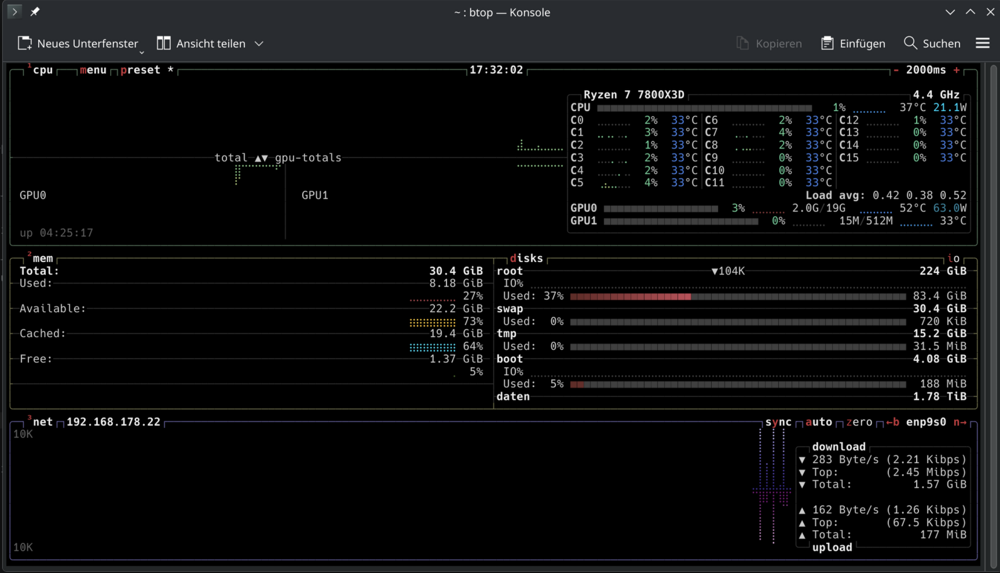
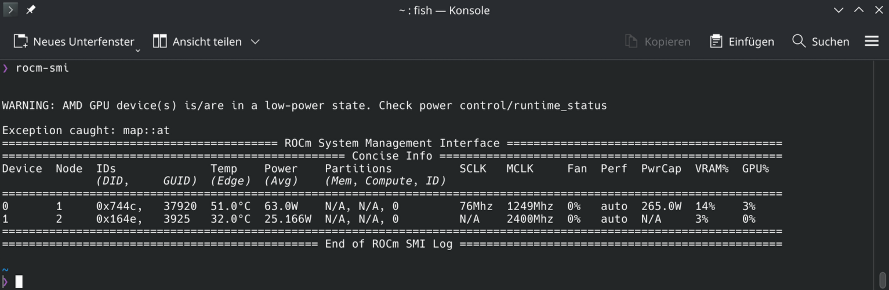

Lokale KI mit RX 7900 XT
…scheint es sich doch anzubieten selber, voll lokal und absolut Datenschutzkonform einen eigenen Agenten aufzusetzen, der im täglichen Workflow unterstützt und sensible Daten handlen kann (nein, nicht clawbot). Mit meinem momentanen Setup unter Nutzung der RDNA3-Architektur einer AMD RX 7900 XT schien ich bestens vorbereitet.
Auch mein kürzlich vollzogener Wechsel von Windows zu CachyOS als meine Hauptdistribution stimmten mich zuversichtlich, dass ich problemlos KI auf diesem Systemen nutzen kann. Die Konfiguration erwies sich dann doch ein klein wenig weitläufiger als geplant.
Was zunächst wie ein standardmäßiges Setup erschien, entwickelte sich schnell zu einem praxisnahen Einstieg in die Grenzen aktueller Software-Stacks, aktuellen Kompatibilitäten sowie technischen Möglichkeiten moderner KI-Systeme. – insbesondere im Zusammenspiel von AMD-Hardware ROCm - RAdeon Open Compute und gängigen LLM-Frameworks. Das Einrichten einer lokal betriebenen KI unter Nutzung der AMD RX 7900 XT(RDNA3-Architektur) erwies sich als interessanter Einblick in den aktuellen Stand der KI-Infrastruktur. Insbesondere wurde mir deutlich, wie stark sich reale Implementierungen von theoretischen Möglichkeiten unterscheiden. Und eins schonmal vorweg:
Spoiler
Noch läuft keine sinnvolle Variante einer KI auf meinem System. Einen rein CPU Beschleunigten Agenten zu betreiben, wie es mir dann relativ schnell und problemlos gelingt, ist mit meiner CPU (AMD Ryzen 7 7800X3D 8-Core Processor) relativ spaßfrei. Zumindest mitgemma2:27b. Mehr dazu dann weiter unten
Ausgangspunkt und Zielsetzung
Ziel war es, ein lokal betriebenes Sprachmodell (LLM) auf einem System mit folgender Charakteristik zu betreiben:
- AMD RX 7900 XT (20 GB VRAM, RDNA3)
- Schneller NVMe-Datenträger für Modelldaten
- Arch Linux-basierte Distribution (CachyOS)
- Nutzung moderner Tools wie Ollama und Open WebUI
Ein besonderer Fokus lag auf:
- Nutzung der GPU zur Beschleunigung
- Auslagerung der Modelldaten auf ein separates Laufwerk
- Integration in eine Weboberfläche
Phase 1: Einrichtung mit Ollama und Open WebUI
Der erste Ansatz erfolgte über Ollama, ein weit verbreitetes Framework zur lokalen Ausführung von Sprachmodellen. Ich war zuerst begeistert von der unkomplizierten Installation - Ganz entsprechend der offiziellen Dokumentation.
Stark motiviert, dass ich ja wohl die 20 GB Grafikspeicher meiner Karte so gut wie möglich ausnutzen möchte und aufgrund meiner anfänglichen Recherche entschied ich mich zuerst für die Installation des Modells gemma2:27b von Google.
Um ebenfalls meine schnelle M2.NVMe zu nutzen passte ich noch den Speicherort des Modells an. Dies erforderte Änderungen der systemd-Service-Konfiguration von Ollama.
Anschließend wurde Open WebUI über Docker eingebunden, um eine komfortable Benutzeroberfläche bereitzustellen. Die Verbindung zwischen WebUI und Ollama konnte im Browser erfolgreich hergestellt werden. Nach der ersten Accouint Erstellung war das Modell in der Oberfläche auswählbar und ausführbar. Zumindest in halbwegs..
Erste Probleme: Performance und CPU-Last
Bereits bei den ersten Interaktionen mit dem Modell fiel auf:
-
Sehr lange Antwortzeiten
-
Hohe CPU-Auslastung
-
Keine erkennbare GPU-Nutzung

Zur Analyse wurde der Systemmonitor btop eingesetzt. Ein Tool, das ich an dieser Stelle nochmal hervorheben will. Es besticht durch seine klaren Farben und schnell durchschaltbaren Ansichten.
Btop bestätigte eindeutig, dass die gesamte Last ausschließlich über die CPU lief.
Phase 2: Analyse der GPU-Nutzung
Im nächsten Schritt wurde überprüft, ob die GPU grundsätzlich korrekt erkannt wird.
Terminal Werkzeuge wie rocminfo und rocm-smi bestätigten:
- Die GPU wird vom System erkannt (gfx1100)
- ROCm ist grundsätzlich funktionsfähig
- Die GPU befindet sich jedoch während der Inferenz im Idle-Zustand

Die Hardware scheint korrekt eingebunden, wird jedoch von den verwendeten Frameworks nicht aktiv genutzt.
Phase 3: Manuelles Modell-Handling über HuggingFace
Um mehr Kontrolle über die Modellverwendung zu erhalten, wechsle ich den Ansatz. Statt Ollama nun ein direkter Download eines GGUF-Modells von HuggingFace.
Hierfür wurde eine isolierte Python-Umgebung eingerichtet, um Konflikte mit dem System-Python zu vermeiden. Anschließend wurde die Bibliothek huggingface-hub installiert und ein Zugriffstoken konfiguriert.
Der Download selbst erforderte mehrere Iterationen, da:
- einige Repositories nicht mehr existierten
- Dateinamen nicht korrekt waren
- Authentifizierung notwendig war
Letztlich konnte ein kompatibles Modell von gemma erfolgreich in das gewünschte lokale Verzeichnis meiner NVMe geladen werden. Hier waren vor Allem die anfänglich verwirrenden Modellangaben und deren Pfade im huggingface-hub, sowie die korrekte Angabe derselben im Startsscript eine, für mich anscheinend immer wieder kehrende, Herausforderung. Auch die Tatsache, dass nicht alle Repositories gleichermaßen public - also für alle Nutzer gleichermaßen verfügbar sind - gillt es erstmal heraus zu finden und korrekt anzuwenden.
Phase 4: Einsatz von llama.cpp
Mit dem lokal vorliegenden Modell wurde anschließend llama.cpp eingesetzt, ein leichtgewichtiges Framework zur Ausführung von GGUF-Modellen.
Der Build-Prozess erfolgte mittels CMake und aktivierter HIP-Unterstützung zur Erreichung der optimalen Nutzung meiner Grafikkarte. Hier war es nötig ein script zu erstellen, dass ich ehrlicherweise mit Hilfe einer andern KI erstellt habe. The circle of life?
Nach erfolgreichem Kompilieren zeigte sich jedoch:
- Der Server startete korrekt
- Das Modell konnte geladen werden
- GPU-Parameter wurden ignoriert
Eine Überprüfung der Build-Optionen ergab, dass keine aktive GPU-Unterstützung vorhanden war, obwohl diese explizit angefordert wurde.
Ich stand wieder am Anfang..
Technische Einordnung
Nun begebe ich mich auf die Suche im Netz, um mögliche Konflikte meiner Hardware mit meinen genutzten Werkzeugen zu untersuchen. Die Ursache liegt nicht in einem einzelnen Fehler, sondern in der aktuellen Softwarelandschaft:
- Viele KI-Frameworks sind primär für NVIDIA CUDA entwickelt
- AMD ROCm wird im Steup nur eingeschränkt unterstützt
- RDNA3 (RX 7000 Serie) ist besonders schlecht integriert
- GPU-Offloading funktioniert häufig nur experimentell oder gar nicht
Dies führt zu einer Situation, in der:
- die Hardware theoretisch geeignet ist
- die Software jedoch nicht in der Lage ist, diese effizient zu nutzen
Fazit
Das Einrichten einer lokalen KI unter den gegebenen Voraussetzungen stellte sich als anspruchsvolle, aber äußerst lehrreiche Übung dar. In einer perfekten Welt hätte ich mich wohl vorher korrekt informiert und direkt ein passendes Model installiert. Aber so hatte ich Spaß beim Tüfteln, habe einige Werkzeuge kennen gelernt und freue mich schon auf die nächsten Schritte auf meinem Weg zur unabängigen, lokalen KI!
Zusammenfassend wurde deutlich, dass:
- die praktische Umsetzbarkeit stark von der Hardware-Unterstützung abhängt
- AMD-GPUs aktuell im KI-Bereich strukturelle Nachteile haben
- viele vermeintlich unterstützte Features in der Praxis nicht funktionieren
Das Ergebnis war ein funktionierendes, jedoch CPU-basiertes Setup, das zwar nutzbar ist, aber nicht annähernd die erwartete Performance liefert. Also quasi nutzlos für mehr als ein wenig Unterhaltung. Es ist jedoch schön, respekteinflößend und faszinierend gleichzeitig zu beaobachten wie die Maschine einfach zu “leben” beginnt. Der aktuelle Stand stellt eine solide Grundlage dar, auf der weiter aufgebaut werden kann. Ich werde in den kommenden Tagen und Wochen noch weiter erforschen wie ich meine Hardware effizient für zumindest einige KI-Modelle nutzen kann. Die Möglichkeit Daten lokal zu halten und einen persönlichen Kontext im Agenten zu speichern, ohne dass Big Tech darauf zugreifen kann, sind sehr verlockend.
Als nächste Schritte stelle ich mir folgendes vor::
- Test kleinerer Modelle zur Reduktion der CPU-Last -> Gemma2-7B-Q4_K, MPT‑7B oder LLaMA2-7B-Q4_K
- Beobachtung zukünftiger Entwicklungen in ROCmund llama.cpp
- Evaluierung alternativer Frameworks mit besserer AMD-Unterstützung
- mögliche Hybridlösungen (CPU + begrenztes GPU-Offloading)
- Die Integration mit LMStudio, welches als Lösung vielversprechend klingt
Wer Tips und Tricks dafür hat, wie man CachyOS und AMD Hardware solide Konfiguriert, schreibt es gerene in die Kommentare!
Vielen Dank fürs Lesen
Euer Keeks